Matérias
O que se sabe da descoberta no pré-sal anunciada por petroleira britânica como sua 'maior em 25 anos'
BBC News Brasil - 04.08.2025
"Ainda há dúvidas sobre essas quantidades, mas mesmo assim deve ser uma quantidade realmente relevante", afirmou David Zylbersztajn , ex-diretor geral da Agência Nacional do Petróleo (ANP), professor no Instituto de Energia da PUC-Rio e sócio da DZ Negócios com Energia.
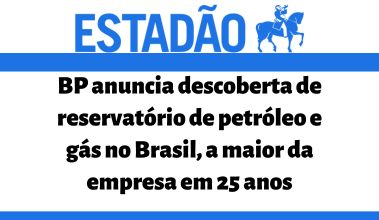
BP anuncia descoberta de reservatório de petróleo e gás no Brasil, a maior da empresa em 25 anos
Estadão - 04.08.2025
Para Edmar Almeida, professor e pesquisador do Instituto de Energia da Pontifícia Universidade Católica do Rio de Janeiro (PUC-Rio), se a BP comprovar que a descoberta feita no campo Bumerangue é realmente significativa, poderá ser um “game changer” (divisor de águas) para a petroleira, “que andava meio nas cordas por causa dos rumores de compra pela Shell”.
Governo aprova aumento de etanol nos combustíveis; mistura pode afetar motor do carro?
CBN - 26.06.2025
O professor do Instituto de Energia da PUC Rio e ex-diretor-geral da ANP, David Zylbersztajn , em entrevista aos âncoras Mílton Jung e Nadedja Calado no Jornal da CBN, destaca que o Brasil é pioneiro em termos de utilização de combustíveis renováveis e esse aumento é muito bem-vindo.
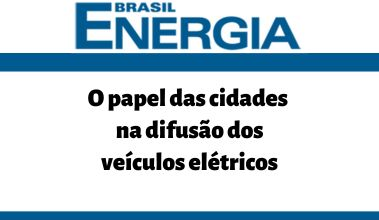
O papel das cidades na difusão dos veículos elétricos
Brasil Energia - 09.06.2025
Em artigo de autoria de Edmar de Almeida (IEPUC), comenta sobre a rápida difusão global dos VEs, o qual é impulsionada por queda nos custos e inovações, mas no Brasil o avanço depende fortemente das cidades para prover infraestrutura de recargas, essencial para ampliar o uso.
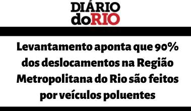
Levantamento aponta que 90% dos deslocamentos na Região Metropolitana do Rio são feitos por veículos poluentes
Diário do Rio - 02.06.2025
"Segundo um levantamento feito pelo Instituto de Energia da PUC-Rio (IEPUC-Rio), o transporte rodoviário emite até 46 vezes mais CO2 por passageiro a cada quilômetro do que o trem ou o metrô, por exemplo. Além do prejuízo ao meio ambiente, o uso dos modais mais poluentes tem impacto direto na saúde da população e na economia da cidade."
Petrobras descobre novo poço de petróleo de alta qualidade na Bacia de Santos
Surgiu - 10.05.2025
O professor Edmar de Almeida, do Instituto de Energia da PUC Rio, comentou sobre a descoberta, destacando que ainda não há uma definição clara sobre a viabilidade comercial da produção e o volume de petróleo encontrado. Atualmente, a Petrobras está na fase de avaliação do campo, um processo que deve se estender até 2027.
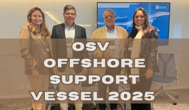
Perspectivas da Economia Brasileira e o Impacto no setor de oléo e gás
OSV Offshore Support Vessel - 20.03.2025
Participação do Prof. Eloi Fernández e Edmar de Almeida do IEPUC no OSV Offshore Support Vessel 2025, dia 20 de março de 2025 no auditório da Kincaid, no Centro/RJ.
Foi uma excelente oportunidade para debater o futuro do setor e o papel do Brasil nesse cenário.
Na foto, da esquerda para direita: Camila Mendes Vianna Cardoso (Kincaid); Edmar de Almeida (IEPUC); Eloi Fernández y Fernández (IEPUC) e Tabita Loureiro (PPSA).
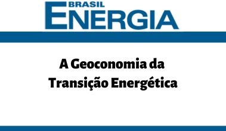
A Geoconomia da Transição Energética
Brasil Energia - 07.03.2025
O artigo "A Geoconomia da Transição Energética" de autoria de Edmar de Almeida (IEPUC) aborda a necessidade de justificar políticas de promoção de fontes renováveis, considerando tanto a emergência climática quanto os custos e benefícios econômicos.
Caminhos do Rio
O Globo - 24.02.2025
Veja a participação do Prof. Edmar de Almeida no painel 2, "O desafio da tarifa única", do evento Caminhos do Rio, ocorrido dia 18/02 no auditório do Jornal o GLOBO.
Transição energética cria novos eixos de poder
O Globo - 31.01.2025
Artigo de autoria de David Zylbersztajn (Professor do IEPUC) publicado no jornal "O Globo".
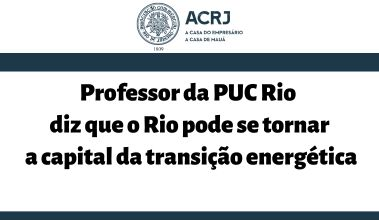
Professor da PUC Rio diz que o Rio pode se tornar a capital da transição energética
ACRJ - 22.11.2024
O professor da PUC Rio, Edmar de Almeida, participou da reunião mensal do Conselho Empresarial de Energia e Transição Energética da ACRJ e destacou a importância do Rio na área de energia, afirmando que a cidade pode se tornar a capital da transição energética.
Ele fez a palestra “Transição Energética nas Cidades” abordando o papel das cidades na transição energética, mobilidade sustentável, gestão de resíduos urbanos e economia circular, entre outros temas.
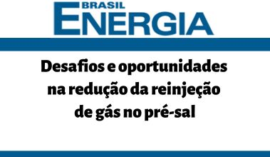
Desafios e oportunidades na redução da reinjeção de gás no pré-sal
Brasil Energia - 21.11.2024
O professor e pesquisador do IEPUC Edmar de Almeida com a co-autoria de Eloi Fernandez y
Fernandez (Diretor do IEPUC) e Felipe Freitas da Rocha (IEPUC) publicaram o
artigo "Desafios e Oportunidades na redução da reinjeção de gás no pré-sal".
Onde avalia o impacto da contaminação por CO2 na reinjeção de gás natural, analisa a estratégia de reinjeção alternada de água e gás (WAG) e a utilização de plataformas vocacionadas ao petróleo.
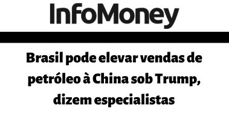
Brasil pode elevar vendas de petróleo à China sob Trump, dizem especialistas
InfoMoney - 08.11.2024
Por outro lado, o professor Edmar de Almeida, do Instituto de Energia da PUC-Rio, pontuou que a prometida política de expansão da produção de petróleo de Trump poderia contribuir com um efeito de redução dos preços globais do petróleo, diante de uma maior oferta internacional.
Brasil pode virar importador de petróleo em dez anos se não encontrar novas reservas
Bahia.ba - 03.11.2024
O Estadão aponta que para o pesquisador e professor do Instituto de Energia da PUC-Rio, Edmar Almeida, não existe outra opção a não ser a exploração da bacia da Foz do Amazonas, na Margem Equatorial, onde existe chance de se encontrar reservatórios gigantes a exemplo dos vizinhos da região, Guiana e Suriname.
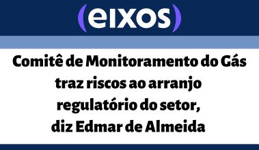
Comitê de Monitoramento do Gás traz riscos ao arranjo regulatório do setor, diz Edmar de Almeida
Eixos - 26.09.2024
O novo Comitê de Monitoramento do Setor de Gás Natural (CMSGN), instituído esta semana pelo Ministério de Minas e Energia (MME) por portaria, traz um risco para o funcionamento do atual arcabouço regulatório, avalia o professor do Instituto de Energia da PUC-Rio, Edmar de Almeida.
Em entrevista ao estúdio eixos, na ROG.e, ele destacou que o novo decreto regulamentador da Lei do Gás e a criação do Comitê partem de um diagnóstico de que a regulação do setor de gás está com “uma mão muito leve”.
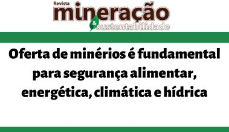
Oferta de minérios é fundamental para segurança alimentar, energética, climática e hídrica
Revista Mineração e Sustentabilidade - 10.09.2024
David Zylbersztajn (IEPUC) foi um dos debatedores no painel “Segurança Mineral, Segurança Energética, Segurança Alimentar e Segurança Hídrica” na Exposibram 2024.
Hidrogênio Sustentável Perspectivas Para o Desenvolvimento e Potencial para Indústria Brasileira
Estadão - 30.08.2024
“O governo tem espaço para trabalhar sem provocar um desastre no setor de óleo e gás”, afirma Almeida em entrevista ao Estadão.
“O processo de revisão dos planos de desenvolvimento pela ANP não pode criar incertezas que gerem paralisia ou criem dificuldades
para atrair investimentos para novos campos de petróleo. Isso pode gerar um ambiente de negócios muito ruim.”
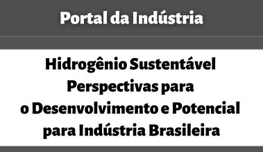
Hidrogênio Sustentável Perspectivas Para o Desenvolvimento e Potencial para Indústria Brasileira
Portal da Indústria - 26.08.2024
O hidrogênio é visto como crucial para a descarbonização, especialmente em setores industriais de alta demanda energética.
O estudo da CNI com a consultoria do IEPUC (Instituto de Energia da PUC-Rio) também enfatiza a importância da produção local para reduzir custos e fortalecer a indústria nacional.
Transição Energética no Mundo e na América Latina: Ambição e Realidade
Brasil Energia - 19.08.2024
A transição energética é um desafio global, impulsionada pela necessidade de reduzir as emissões de carbono e mitigar as mudanças climáticas. No entanto, a América Latina enfrenta desafios específicos que tornam essa transição complexa.
Este artigo, de autoria de Edmar de Almeida (IEPUC), explora a ambição e a realidade da transição energética na região, destacando o papel das políticas públicas, os investimentos necessários e as barreiras que ainda precisam ser superadas para alinhar-se com as metas globais.
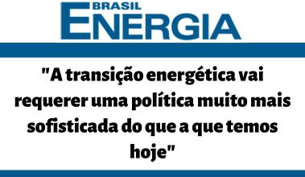
"A transição energética vai requerer uma política muito mais sofisticada do que a que temos hoje"
Brasil Energia - 02.08.2024
Em entrevista à Revista Brasil Energia, disponível para assinantes, o prof. Edmar de Almeida afirma que é preciso dar mais atenção à demanda de energia para acelerar o processo de Transição Energética. O tema foi pauta do 9th Latin American Energy Economics Meeting (ELAEE), que ocorreu de 28 a 30 Julho 2024 na PUC-Rio.
Gás Natural: ficaremos com uma abertura inacabada?
Brasil Energia - 24.06.2024
O artigo "Gás Natural: ficaremos com uma abertura inacabada?", publicado pela Editora Brasil Energia com a autoria de Edmar de Almeida e colaboração de Felipe Freitas, argumenta que, apesar dos avanços da Nova Lei do Gás, a abertura do mercado de gás natural brasileiro permanece incompleta. Os autores destacam a falta de regulamentação de tópicos cruciais e a mudança de foco do governo para o aumento da oferta e redução de preços, em detrimento da competição. Aponta ainda a concentração da oferta nas mãos da Petrobras como um entrave à atratividade de investimentos privados no setor. O artigo conclui questionando a sustentabilidade de um mercado com a abertura inacabada e defende a necessidade de um compromisso firme com a agenda regulatória da Nova Lei do Gás, a fim de promover a concorrência e o desenvolvimento do setor a longo prazo.
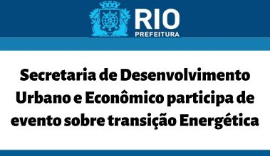
Secretaria de Desenvolvimento Urbano e Econômico participa de evento sobre transição Energética
Rio Prefeitura - 03.06.2024
– Estamos diante de um projeto pioneiro. O IEPUC fez uma carta de intenções com a Prefeitura do Rio, por meio da Secretaria Municipal de Desenvolvimento Urbano e Econômico e Invest.Rio, e a ONU-Habitat. O objetivo do documento é estudar mecanismos para potencializar a transição energética, sabendo que é nas cidades em que tudo acontece – celebrou professor do IEPUC, David Zylbersztajn, que participou da abertura. Ele disse também que cidades inteligentes devem englobar a descarbonização, descentralização, digitalização e a democratização do acesso à energia. “A estes, eu acrescentaria ainda a segurança energética”, ressaltou.
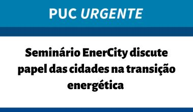
Seminário EnerCity discute papel das cidades na transição energética
PUC URGENTE - 27.05.2024
O PUC URGENTE conversou com o diretor do IEPUC, professor Eloi Fernández y Fernández, sobre o projeto e o seminário EnerCity – Rio: Capital da Transição Energética em Cidades.
Precificação horária e a geração elétrica híbrida
Brasil Energia - 10.04.2024
O professor e pesquisador do IEPUC Edmar de Almeida com a coautoria de Vinicius dos Santos (IEPUC) publicaram o artigo "Precificação horária e a geração elétrica híbrida".
Primeiro leilão de transmissão de energia do ano não vai gerar impacto nas contas, diz especialista
Jornal da CBN - 28.03.2024
Em entrevista à CBN, David Zylbersztajn (Instituto de Energia da PUC-Rio) explica como será o leilão e qual seu impacto.
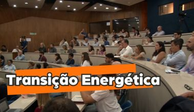
Zerar emissões de carbono exigiria investimento de US$ 9 trilhões
TV PUC-Rio - 27.03.2024
Especialista em financiamento climático, o professor espanhol Luis Maldonado, da IE University, fez uma palestra sobre como destravar investimentos para a descarbonização. O encontro foi organizado pelo Núcleo KPMG/IEPUC, coordenado pelo professor Edmar de Almeida (IEPUC). Também participaram do evento o professor Winston Fritsch, coordenador do curso de Economia e Regulação da Mudança Climática, e os representantes da organização global KPMG, Maria Eugênia Busoi e Felipe Salgado.
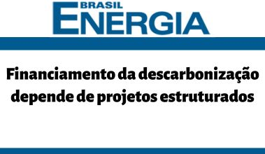
Financiamento da descarbonização depende de projetos estruturados
Brasil Energia - 15.03.2024
No dia 14 de março pesquisadores do IEPUC, prof. Edmar de Almeida e professor Winston Fritsch, professor Luis Maldonado da IE University, além de representantes da KPMG Maria Eugênia Buosi - Sócia de ESG Financial Risk Management e Felipe Salgado - Sócio-diretor líder de Descarbonização, se reuniram no auditório do RDC da PUC-Rio para tratar do tema "Financiamento da descarbonização".
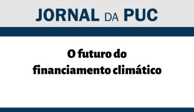
O futuro do financiamento climático
Jornal da PUC - 13.03.2024
"O JORNAL DA PUC conversou com o professor Edmar de Almeida, pesquisador do IEPUC, sobre o encontro “Finanças climáticas: destravando os investimentos para a descarbonização”, promovido pelo Instituto de Energia da PUC-Rio (IEPUC), juntamente com a organização global KPMG e a International University, da Espanha. O evento será nesta quinta-feira, 14, no auditório do RDC, e terá a participação do consultor internacional do International Finance Corporation (IFC) e do Banco Mundial, professor Luis Maldonado García-Pertierra, da IE University, e de Winston Fritsch, especialista e referência nacional na agenda de finanças e sustentabilidade."
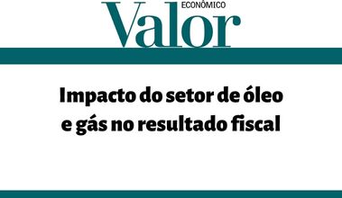
Impacto do setor de óleo e gás no resultado fiscal
Valor Econômico - 08.02.2024
Edmar de Almeida, Eloi Fernández y Fernández e Felipe da Rocha (IEPUC) são os autores do artigo "Impacto do setor de óleo e gás no resultado fiscal".
Estamos um passo atrás no mercado de hidrogênio, diz Edmar Fagundes de Almeida
Enervision - 13.12.2023
O professor e pesquisador Edmar de Almeida (IEPUC) é o entrevistado do portal Enervision, o qual fala sobre os desafios da transição energética e o mercado de hidrogênio no país.
Cidades são o ponto cego da transição energética
O Globo - 11.12.2023
David Zylbersztajn , Edmar de Almeida e Eloi Fernández y Fernández (IEPUC) são os autores do artigo "Cidades são o ponto cego da transição energética".
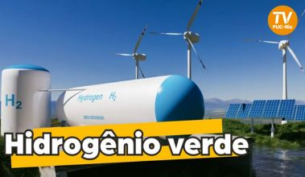
IEPUC terá cátedra sobre transição energética e usina piloto híbrida
TV PUC-Rio - 07.12.2023
"O IEPUC vai inaugurar em 2024 uma usina piloto híbrida no campus de Xerém. O projeto promove a transição energética, medida vista como forma de combate às mudanças climáticas. Esta é uma das conquistas do grupo que neste ano também firmou parcerias para estimular o uso e conhecimento de diferentes fontes de energia. O professor e pesquisador Edmar de Almeida vai coordenar a cátedra K-P-M-G/IEPUC."
Brasil analisa convite para entrar na Opep+, grupo que reúne grandes exportadores de petróleo
O Globo - 30.11.2023
"David Zylbersztajn, ex-diretor-geral da Agência Nacional de Petróleo (ANP) e professor da PUC-Rio, avalia que a resposta do governo foi protocolar e diplomática. O Brasil, diz, não tem nada a ganhar ao entrar na Opep+, e até em termos operacionais haveria dificuldade para colocar em prática decisões do cartel:
— Esses países têm mercados controlados por empresas estatais. Aqui, por mais que a Petrobras seja majoritária, temos um mercado muito mais aberto e competitivo. Fico sem saber como o Brasil iria, por exemplo, operacionalizar qualquer decisão. A Petrobras teria que ser esse instrumento, e claramente seria prejudicada."
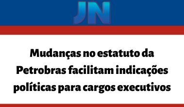
Mudanças no estatuto da Petrobras facilitam indicações políticas para cargos executivos
Jornal Nacional - 30.11.2023
"O especialista em energia e petróleo Edmar de Almeida diz que uma empresa de capital aberto como a Petrobras precisa de transparência em todas as decisões e nomeações:
“É muito importante que isso seja bem explicado, qualquer modificação, de maneira a não passar a imagem que nós estamos retrocedendo a uma prática de governança que foi desvendada durante os escândalos da Operação Lava Jato, onde se viu que você tinha uma
governança muito frouxa, uma governança que realmente acabou levando a empresa para uma trajetória econômica e de práticas de gestão muito
inadequadas”."
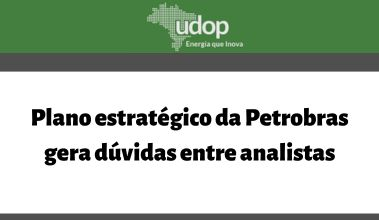
Plano estratégico da Petrobras gera dúvidas entre analistas
União Nacional da Bioenergia - 27.11.2023
"Edmar de Almeida, pesquisador e professor do Instituto de Energia da PUC-Rio, avalia que o maior volume de investimentos pela companhia é natural nas atuais circunstâncias e está dentro da capacidade da estatal. Para ele, os números não indicam uma guinada na condução da empresa, que ainda tem a maior parte dos recursos destinada para projetos de exploração e produção (E&P)."
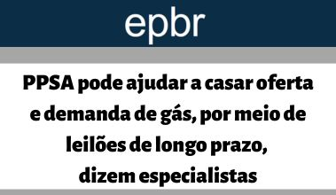
PPSA pode ajudar a casar oferta e demanda de gás, por meio de leilões de longo prazo, dizem especialistas
EPBR - 23.11.2023
"O professor do Instituto de Energia da PUC, Edmar de Almeida, acredita que leilões são instrumentos importantes para ajudar a reduzir o grau de incertezas com que a indústria de gás lida na decisão de investimentos. Ele relembra o caso do setor elétrico."
O Projeto Sergipe Águas Profundas pode naufragar
Destaque Notícias - 10.11.2023
"O Brasil, no entanto, depende do gás de Sergipe, entre outros projetos, para garantir a sua autossuficiência. 'Sem esse projeto, vamos continuar importando gás, dependendo do GNL para atender à demanda firme. Um possível adiamento [de SEAP] também pode ter impacto sobre o preço do gás no Brasil', afirmou Almeida, professor e pesquisador do Instituto de Energia da PUC-Rio (IEPUC)."
Prefeitura firma parceria com PUC-Rio e ONU Habitat para preparar o Rio para a transição energética
O Globo - 31.10.2023
A Prefeitura do Rio e a Invest.Rio assinaram um acordo de cooperação técnica com o Instituto de Energia da PUC-Rio (IEPUC) e a ONU-Habitat para subsidiar políticas públicas urbanas de transição energética.
Competitividade do Hidrogênio de Baixo Carbono: Mercado Doméstico ou Exportação?
Brasil Energia - 30.10.2023
O professor e pesquisador Edmar de Almeida (IEPUC) é o autor do artigo "Competividade do Hidrogênio de Baixo Carbono: Mercado Doméstico ou Exportação?", que analisa as vantagens competitivas do Brasil para a produção de hidrogênio verde e o grande potencial de geração de energia renovável com abundantes recursos solares e eólicos e os desafios como transporte, infraestrutura e distribuição.
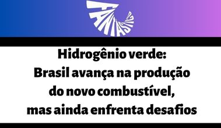
Hidrogênio verde: Brasil avança na produção do novo combustível, mas ainda enfrenta desafios
Fantástico - 29.10.2023
'“O hidrogênio é hoje uma alternativa de produção de um combustível que pode perfeitamente substituir os combustíveis fósseis em todas as aplicações. Desde que o hidrogênio seja obtido a partir de uma fonte renovável”, explica professor do Instituto de Energia da PUC-Rio e especialista em transição energética, Edmar de Almeida.'
Comitiva do Amapá na OTC Brasil visita PUC-Rio
Diário do Amapá - 26.10.2023
"Os empresários e autoridades do Amapá estiveram no campus da universidade visitando o Instituto de Energia da PUC-Rio e os laboratórios de indústria 4.0, tecnologia digital que mostra como a PUC hoje está equipada para apoiar o setor."
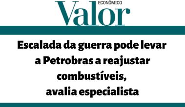
Escalada da guerra pode levar a Petrobras a reajustar combustíveis, avalia especialista
Valor Econômico - 18.10.2023
"O pesquisador e professor do Instituto de Energia da PUC-Rio Edmar de Almeida avalia que uma eventual escalada da guerra entre Israel e o grupo terrorista Hamas pode afetar o mercado global de petróleo, com reflexos no Brasil. O principal impacto seria uma possível elevação dos preços internacionais do óleo cru, o que poderia pressionar a Petrobras a reajustar os combustíveis."
Revitalização do Jardim de Alah prevê placas de energia solar nos edifícios da Cruzada São Sebastião
Ancelmo Gois - O Globo - 14.10.2023
"Antes mesmo do início das obras de reforma do Jardim de Alah, na Zona Sul do Rio, o Consórcio Rio+Verde, vencedor do certame, fez uma parceria com o Instituto de Energia da PUC (IEPUC). A ideia é implantar placas de energia solar nos dez edifícios da Cruzada São Sebastião, que tem 945 apartamentos. "
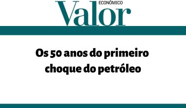
Os 50 anos do primeiro choque do petróleo
Valor Econômico - 11.10.2023
David Zylbersztajn (Professor do IEPUC) e Helder Queiroz são os autores do artigo "Os 50 anos do primeiro choque do petróleo". Ocorrida em outubro de 1973, teve um impacto duradouro na economia mundial e na indústria petrolífera, levando a maior conscientização sobre a importância do petróleo na economia global, bem como as reservas petrolíferas e as ofertas de produção. O texto destaca ainda a importância da Petrobras na busca por petróleo offshore e a quebra do monopólio, o que permitiu a descoberta do pré-sal. O artigo traz observações sobre a transição energética que está moldando a evolução do mercado internacional de energia e exige uma revisão estratégica das empresas petrolíferas.
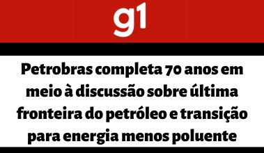
Petrobras completa 70 anos em meio à discussão sobre última fronteira do petróleo e transição para energia menos poluente
G1 - 03.10.2023
De acordo com o professor e pesquisador da Pontifícia Universidade Católica do Rio de Janeiro (PUC-Rio) Edmar Almeida, “as empresas de petróleo estão buscando um horizonte de sustentabilidade de seus negócios. Sabemos que o tamanho do mercado de petróleo vai diminuir e, para buscar dar mais resiliência ao seu portfólio de negócios, as empresas estão buscando fazer investimentos em áreas do setor de energia que tenham futuro”.
Nova série do Fantástico explica a transição energética
Fantástico - 01.10.2023
Os professores do Instituto de Energia da PUC-Rio (IEPUC), David Zylbersztajn e Edmar de Almeida são entrevistados na série "O Futuro da Energia" que mostra a urgência por busca de fontes de energias renováveis.
Falha em linha de transmissão
pode ser gatilho, mas não gerou apagão sozinha, diz especialista
CNN - 19.08.2023
Professor do Instituto de Energia da PUC-RJ, Edmar de Almeida disse em entrevista à CNN neste sábado (19) que uma falha em linha de transmissão no Ceará pode ter sido “gatilho” para o apagão que atingiu o Brasil na última terça-feira, mas que outras disfunções ocorreram na sequência para gerar evento.
“A operação do Sistema Interligado Nacional é extremamente complexa. Acredito que a falha na linha de transmissão pode ter sido o gatilho, mas na sequência ocorreram outras falhas, que podem ser falhas técnicas ou humanas”, disse.
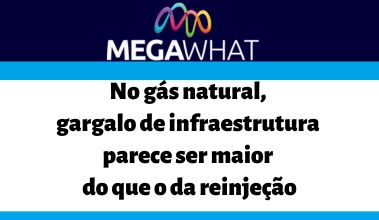
No gás natural, gargalo de infraestrutura parece ser maior do que o da reinjeção
MegaWhat - 18.08.2023
“Quando o Rota 3 ficar pronto, as operadoras poderão aumentar a produção. E aí saberemos se a reinjeção de gás é porque falta estrutura ou se é por razoes econômicas”, disse Edmar Almeida, do IEPUC. Ele lembra que, depois do Rota 3, não há outros projetos de infraestrutura previstos. “Planejar uma nova rota leva tempo, pelo menos uns três ou quatro anos”, disse.
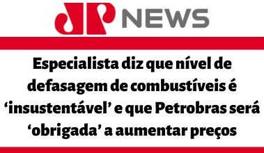
Especialista diz que nível de defasagem de combustíveis é ‘insustentável’ e que Petrobras será ‘obrigada’ a aumentar preços
Valor Econômico - 14.08.2023
Em entrevista ao Jornal da Manhã, da Jovem Pan News, o professor do Instituto de Energia da PUC-Rio, Edmar de Almeida , disse que o nível de defasagem dos combustíveis é “insustentável” e falou que a Petrobras terá que aumentar os preços.
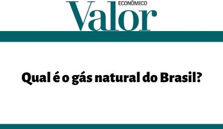
Qual é o gás natural do Brasil?
Valor Econômico - 31.07.2023
Artigo publicado na Valor Econômico por Eloi Fernández e Y Fernández (Diretor do IEPUC) e Edmar de Almeida (Professor do IEPUC) sobre o potencial de gás firme em novos projetos da indústria.
Gás disponível para química e fertilizantes pode alcançar até 25 milhões de m3/dia, diz PUC
EPBR - 25.07.2023
“Olhamos o seguinte: o gás brasileiro é um gás associado [ao petróleo], é um gás firme. Então ele não serve para atender térmica flexível, que pode ficar sem despachar, às vezes, até por anos. Então essa térmica flexível não tem jeito, tem que ser com GNL [gás natural liquefeito]”, comenta o professor do IE-PUC, Edmar de Almeida, um dos autores do estudo, em entrevista à agência epbr.
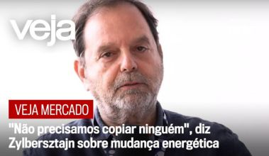
"Não precisamos copiar ninguém", diz Zylbersztajn sobre mudança energética
VEJA Mercado - 20.07.2023
Em entrevista a VEJA Mercado, o prof. David Zylberstajn, do IEPUC, fala sobre a transição energética, o potencial do Brasil para geração de energia e sobre o quanto o país tem a oferecer como um exemplo de matriz limpa.
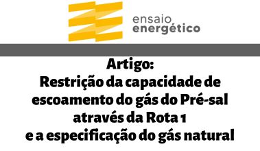
Artigo: Restrição da capacidade de escoamento do gás do Pré-sal através da Rota 1 e a especificação do gás natural
Ensaio Energético - 10.07.2023
Artigo assinado por Felipe Freitas da Rocha, Edmar de Almeida (Pesquisador do IEPUC) e Eloi Fernández y Fernández (Diretor do IEPUC), publicado na Ensaio Energético sobre o declínio de produção de gás pela Rota 1.
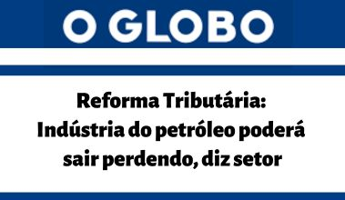
Reforma Tributária: Indústria do petróleo poderá sair perdendo, diz setor
O Globo - 04.07.2023
"Na visão de Edmar Almeida, professor do Instituto de Energia da PUC-Rio, um dos problemas do atual sistema tributário é a combinação de regras muito complexas com um grande número de exceções, para vários setores.
– Cancelar todos os regimes de exceção, para depois renegociar a volta, pode ser mais complicado do que manter os regimes, negociar a reforma, e depois analisar as exceções caso a caso – afirmou o professor."
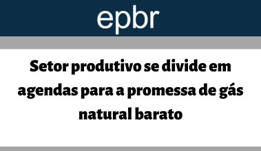
Setor produtivo se divide em agendas para a promessa de gás natural barato
EPBR - 02.06.2023
"Um estudo foi contratado com os pesquisadores da PUC-Rio, Eloi Fernandez e Edmar Almeida. O material deve ser concluído dentro de dois meses e entregue aos ministros Geraldo Alckmin (PSB), da Indústria e Comércio; e Alexandre Silveira, no MME."
Sem novas grandes descobertas de petróleo, Brasil vê pico de produção em 6 anos
Infomoney - 01.06.2023
'“O regime fiscal da partilha foi criado partindo da premissa de que tinha uma área de baixo risco geológico… Mas o que a gente viu nos últimos leilões é que isso não é mais verdade, disse o professor da PUC-Rio Edmar de Almeida, à Reuters.'
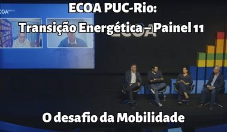
ECOA PUC-Rio: Transição Energética – Painel 11: O desafio da Mobilidade
ECOA PUC-Rio - 01.06.2023
O professor Sergio Braga (Comitê IEPUC) foi o moderador do painel 11: O desafio da Mobilidade, neste painel foi dialogado sobre os desafios da eletrificação de frota não só terrestre, mas marítima e de aviação. Foi comentado sobre o cenário brasileiro da eletromobilidade e o que podemos esperar para a vida útil das baterias recarregáveis e como operacionalizar seu descarte seguro e ainda a relação entre a eletromobilidade, a criação da Economia Verde e geração de créditos de carbono.
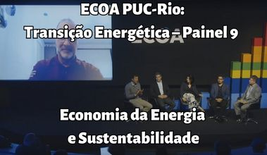
ECOA PUC-Rio: Transição Energética – Painel 9: Economia da Energia e Sustentabilidade
ECOA PUC-Rio - 01.06.2023
O professor Edmar Almeida (IEPUC) foi o moderador do painel Economia da Energia e Sustentabilidade do evento "Transição Energética". Este painel apresentou o cenário de Sustentabilidade e como podemos estabelecer uma Economia da Energia alinhada com os desafios e oportunidades deste cenário. Também foi debatido como apoiar projetos econômicos (“Agenda Verde”) que contribuam para acelerar a transição energética, através de pesquisas, novos modelos de negócios e desenhos de mercado inovadores.
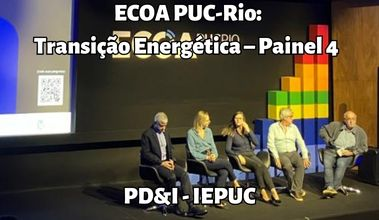
ECOA PUC-Rio: Transição Energética – Painel 4 – PD&I - IEPUC
ECOA PUC-Rio - 30.05.2023
O professor Eloi Fernandez (diretor do IEPUC) foi o mediador do "Painel 4: PD&I em Transição Energética", no primeiro dia do evento ECOA PUC-RIO. O painel trouxe o debate sobre as iniciativas PD&I para transição energética, ressaltando a importância da colaboração entre empresas e instituições de pesquisas acadêmicas no desenvolvimento de novos processos e tecnologias para apoiar a descarbonização e mitigação de impactos ambientais.
PUC-Rio realiza evento gratuito sobre transição energética
Diário do Porto - 26.05.2023
PUC-Rio realiza evento gratuito sobre transição energética nos dias 30, 31 de maio e 1° de junho e dentre os participantes do evento estão os professores Eloi Fernandez (Diretor do IEPUC), Edmar de Almeida (Professor do IEPUC) e Sérgio Braga (Comitê IEPUC).
ESPECIAL: Sem Margem Equatorial, Petrobras terá US$ 3 bi para realocar e pode internacionalizar
Broadcast - 24.05.2023
“Não podendo fazer exploração na área, metade do potencial exploratório da Petrobras desaparece. A empresa vai ter que rever o plano estratégico e decidir se vai usar esse investimento que era da Margem Equatorial no Brasil ou não”, avalia o professor do Instituto de Energia da PUC-Rio, Edmar Almeida.
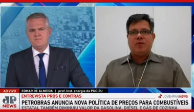
Especialista analisa nova política de preços da Petrobras
JP News - 16.05.2023
"Com o anúncio da Petrobras sobre o fim da paridade de preços internacionais, os preços dos combustíveis e do gás de cozinha caem expressivamente. Para analisar o assunto, o Prós e Contras desta terça-feira (16) recebe o professor do Instituto de Energia da PUC-RJ Edmar Almeida."
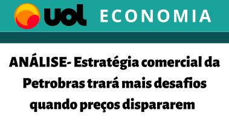
ANÁLISE-Estratégia comercial da Petrobras
trará mais desafios quando preços dispararem
UOL Economia - 16.05.2023
"Por outro lado, o professor da PUC-Rio Edmar de Almeida , ponderou que será uma abordagem positiva se a Petrobras for fiel ao que comunicou ao mercado, de que levará em conta o contexto de concorrência em cada região e vai definir seu preço com base no custo de oportunidade do cliente. "Praticar preços competitivos pressupõe um respeito ao mercado. Isto é muito diferente de preços definidos pelo apenas pelo custo de produção, o que poderia desorganizar a cadeia de valor do setor de derivados e etanol no Brasil", afirmou."
Petrobras confirma estudar
nova regra de preços
Valor Econômico - 15.05.2023
Professor do Instituto de Energia da Pontifícia Universidade Católica do Rio de Janeiro (PUC-Rio), Edmar de Almeida afirma que as declarações do comando da empresa até o momento apontam para ajustes no modelo de preços a partir de critérios técnicos, sem um rompimento com a política de paridade de importação (PPI). “Tanto as falas do Jean Paul Prates quanto o comunicado enfatizam isso”, diz.
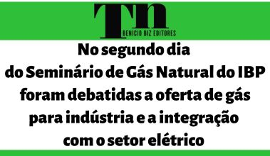
No segundo dia do Seminário de Gás Natural do IBP foram debatidas a oferta de gás para indústria e a integração com o setor elétrico
TN Petróleo - 11.05.2023
Edmar Almeida, professor do Instituto de Energia da PUC Rio , acredita que a grande vantagem da abertura do mercado é criar valor através da inovação. "Esses três novos modelos de negócio podem ter grande impacto no desenvolvimento do mercado: o GNL a granel, a estocagem e biometano".
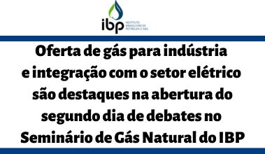
Oferta de gás para indústria e integração com o setor elétrico são destaques na abertura do segundo dia
de debates no Seminário de Gás Natural do IBP
IBP - 11.05.2023
Edmar Almeida, professor do Instituto de Energia da PUC Rio , acredita que a grande vantagem da abertura do mercado é criar valor através da inovação. “Esses três novos modelos de negócio podem ter grande impacto no desenvolvimento do mercado: o GNL a granel, a estocagem e biometano”.
Web Summit Rio 2023
Web Summit Rio - 03.05.2023
O Diretor do IEPUC, prof. Eloi Fernández y Fernández , participou da mesa-redonda promovida pela GALP na tarde do dia 3 de maio com a temática “Como os elétrons moldarão o mercado”. Esta foi a primeira edição da Web Summit Rio, conferência focada em tecnologia e inovação, que ocorreu de 02 a 04 de maio e contou com a presença de mais de 20.000 pessoas.
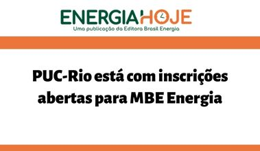
PUC-Rio está com inscrições abertas para MBE Energia
Energia Hoje - 07.03.2023
"O principal desafio do MBE Energia é formar pessoas sobre os fundamentos e as especificidades das
indústrias energéticas, ao mesmo tempo em que apresenta e discute a agenda de mudanças que a
transição energética impõe. “Ou seja, os alunos devem assimilar não apenas como cada segmento
está configurado hoje, mas também entender para onde vai evoluir. Mas este é o desafio de todos
nós que trabalhamos com a energia”, diz Edmar de Almeida, pesquisador do IEPUC.
Segundo ele, existe uma carência muito grande de profissionais com capacidade interdisciplinar na
área de energia. "
Governo quer ampliar papel da Petrobras, com investimentos que vão de fertilizante a refino
O Globo - 09.01.2023
"Segundo Edmar Almeida, professor do Instituto de Energia da PUC-Rio , a Petrobras já tem condições de repensar sua estratégia.
Desde a chegada de Pedro Parente, na gestão de Michel Temer, a companhia concentrou esforços na redução da dívida e na venda de ativos.
Mas agora, após “arrumar a casa”, já teria condições de rever esse planejamento, diz ele. A dívida bruta passou de US$ 109 bilhões em 2017,
para US$ 54,2 bilhões atualmente.
— O Brasil precisa de um plano energético, e a Petrobras se ajusta a isso. Não o contrário. A empresa tem capital aberto e precisa ter uma
dimensão empresarial. A Petrobras não é 100% estatal para ser usada como instrumento público — afirma Almeida."
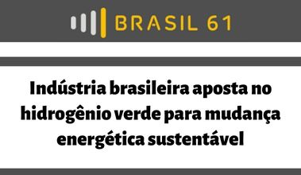
Indústria brasileira aposta no hidrogênio verde para mudança energética sustentável
Brasil 61 - 12.12.2022
"O professor licenciado da Universidade Federal do Rio de Janeiro (UFRJ), que atua no Instituto de Energia da PUC-Rio, Edmar Almeida,
acredita que a indústria terá um papel muito importante na produção de hidrogênio no Brasil.
“A tecnologia de produção, a aplicação dessa tecnologia vai acontecer na indústria. Então é muito importante que o setor se capacite,
tecnologicamente, sua mão-de- obra, o pessoal que vai fazer o estudo, que vai viabilizar essa tecnologia. Por isso é muito importante
o envolvimento da indústria. Ela vai ter que produzir diretamente o hidrogênio, não é só comprar o hidrogênio de outra empresa, que produz
em outro lugar”, pondera. "
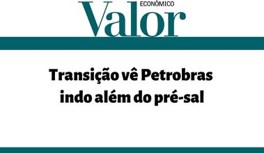
Transição vê Petrobras indo além do pré-sal
Valor Econômico - 07.12.2022
"Edmar Almeida, professor do Instituto de Energia da PUC-Rio, lembra que parte dos desinvestimentos da Petrobras são compromissos assumidos com o Conselho Administrativo e Defesa Econômica (Cade) para a venda de ativos. “Nesses casos, não é só uma questão de mudar [a diretriz] de uma hora para a outra”, ressalta. “Tem que estudar e ver o que pode e o que não pode ser feito, tem que ver onde há implicações regulatórias”, acrescenta."
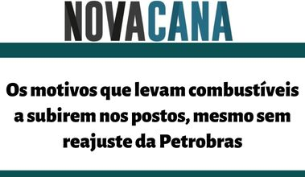
Os motivos que levam combustíveis a subirem nos postos, mesmo sem reajuste da Petrobras
Novacana - 18.11.2022
"O economista e pesquisador Edmar Almeida, do Instituto de Energia da PUC-RJ, concorda que a
recente alta da gasolina é puxada pelo encarecimento do etanol anidro, de natureza sazonal, mas
que também é uma reação à escalada das cotações internacionais do combustível, que baliza a política
de preços dos agentes privados no mercado.
"No caso do etanol, estamos em um momento de entressafra e a demanda de etanol continua alta.
É normal o preço subir nesse período. Faz parte do script essa variação do preço no fechamento da safra", diz Almeida.
"
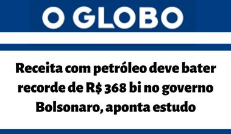
Receita com petróleo deve bater recorde de R$ 368 bi no governo Bolsonaro, aponta estudo
O Globo - 17.11.2022
"— Além do leilão em 2019, o preço do petróleo naquele ano estava entre US$ 60 e US$ 70, patamar já considerado elevado para a média histórica. Mas a arrancada mesmo foi em 2021. A recuperação da economia global e a guerra na Ucrânia fizeram o preço do petróleo superar a marca de US$ 100 o barril — explica Edmar Almeida, professor do Instituto de Energia da PUC-Rio."
Lula abre enquete sobre volta do horário de verão
SBT News - 08.11.2022
O pesquisador Marco Haikal, do Instituto de Energia da PUC-Rio , fala ao SBT News sobre o horário de verão e que novas tecnologias reduziram o consumo de energia.
Equipe de Lula estuda preços regionais para os combustíveis em nova política da Petrobras
O Globo - 08.11.2022
"O fim da paridade de preços de importação traz dúvidas ainda sobre como ficariam as refinarias já privatizadas, os produtos de etanol e
as centenas de distribuidoras que importam combustíveis, avalia Edmar Almeida, professor do Instituto Energia da PUC-Rio:
— Tivemos uma eleição sem programas. Temos hoje esboços e ideias que não foram debatidos. As propostas vão surgir neste momento de transição. A estratégia da Petrobras é o ponto central, já que não é viável “abrasileirar” os preços, pois isso vai exigir o uso de recursos públicos, como a criação de um fundo para subsidiar, uma vez que os impostos já foram reduzidos."
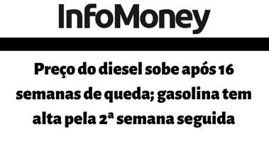
Preço do diesel sobe após 16 semanas de queda; gasolina tem alta pela 2ª semana seguida
InfoMoney - 24.10.2022
"Edmar Almeida, economista e professor da PUC-RJ, diz que por trás das altas estão os aumentos promovidos por importadores e pela Refinaria de Mataripe (BA), que foi vendida pela Petrobras e hoje é controlada pela Acelen. Sozinha, ela é responsável por 12% a 15% da capacidade de refino do Brasil."
Após 3 meses de queda, gasolina sobe por causa de refinarias privadas e importadores
Broadcast - 18.10.2022
"Hoje a Petrobras tem peso de pouco mais de 50% nesse preço médio final. O restante é o etanol, refinarias privadas e importadores", diz Edmar Almeida, professor do Instituto de Energia da PUC-Rio.
Petróleo oscila com guerra e aperto monetário, mas tendência segue de valorização
InfoMoney - 22.09.2022
“A queda dos preços nos últimos meses está relacionada com o reequilíbrio de oferta e demanda para 2022. A Rússia conseguiu redirecionar suas exportações para outros países e isto permitiu o mercado se manter abastecido”, explica Edmar Almeida, professor do Instituto de Energia da PUC-Rio.
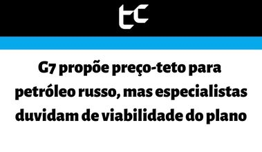
G7 propõe preço-teto para petróleo russo, mas especialistas duvidam de viabilidade do plano
Mover - TC - 02.09.2022
“Está ficando cada vez mais claro que os países da Ásia não estão aderindo a essas medidas em relação à Rússia, não estão alinhados com o Ocidente, com Estados Unidos e Europa. E o comércio de petróleo é um ramo que está de certa forma acostumado a burlar essas restrições”, explicou Almeida.
Diesel poderia cair R$ 0,49/l, mas expectativa de alta dificulta redução do preço
Portal Terra - 03.08.2022
"O alívio nas cotações (do diesel) é recente. O momento ainda é de incerteza, e a previsão é que o último trimestre do ano vai ser difícil, com recrudescimento das sanções à Rússia", diz Almeida.
Professor Edmar de Almeida fala sobre redução de preço da Petrobras
Jornal da Manhã - 29.07.2022
Professor Edmar de Almeida (IEPUC) é o entrevistado do Jornal da Manhã pela Jovem Pan News, onde fala sobre redução de preço da gasolina pela Petrobras, subsídio e política no preço dos combustíveis.
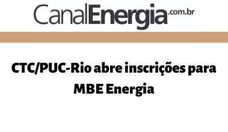
CTC/PUC-Rio abre inscrições para MBE Energia
Canal Energia- 25.07.2022
Pós-graduação é voltada para formados em engenharia, direito, economia, administração e áreas afins
Brasil aumenta suas importações da Rússia, apesar da guerra
El Mundo - 16.07.2022
“o professor Edmar Almeida, do Instituto de Energia da Pontifícia Universidade Católica do Rio de Janeiro (PUC-Rio) , aprecia "um esforço diplomático" do governo Bolsonaro para que "a Rússia venda seus produtos para empresas brasileiras”
Compra de diesel russo planejada por Bolsonaro pode trocar uma crise pela outra, dizem especialistas
O Globo - 12.07.2022
"Na avaliação de integrantes do governo, o Brasil deve ser livre para fazer negócios com o mundo todo. Esse ponto é lembrado por Edmar Almeida, professor do Instituto de Energia da PUC-Rio. Ele destaca que o governo brasileiro já deixou claro que não apoia sanções contra a Rússia, portanto não vê risco na operação:
-- O Brasil não está apoiando as sanções contra a Rússia. Não faz sentido não se alinhar com a Europa e deixar de comprar. Mas não acho que, se comprar (petróleo russo), vai ter algum efeito sobre o alinhamento dos preços com o mercado internacional."
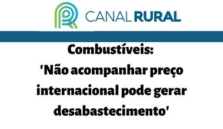
Combustíveis: 'Não acompanhar preço internacional pode gerar desabastecimento'
Canal Rural - 20.06.2022
"Segundo o professor do Instituto de Energia da PUC-RJ, Edmar de Almeida, essa disparidade leva as empresas privadas a não participarem do mercado de importação.
“O Brasil importa entre 20% e 25% do diesel que consome, além de também importar gasolina e GLP. Então se os preços praticados no Brasil não acompanharem os preços internacionais significa que só a Petrobras vai poder importar e vender no Brasil esses produtos”, afirma.
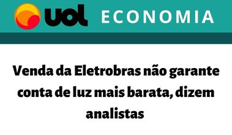
Venda da Eletrobras não garante conta de luz mais barata, dizem analistas
UOL Economia - 14.06.2022
"Ainda que o Ministério de Minas e Energia mantenha a previsão de redução nas contas de luz, o objetivo principal da privatização da Eletrobras não é esse, segundo explica Edmar Almeida, do Instituto de Energia da PUC (Pontifícia Universidade Católica) Rio. Para o professor, a ideia é possibilitar à estatal a retomada de investimentos no setor elétrico, mas os custos ao consumidor ainda dependerão do mercado. [...]."
Venda da parte da União em contratos de partilha de petróleo é criticada
Folha de SP - 11.06.2022
O professor Edmar Almeida, do Instituto de Energia da PUC-Rio, avalia que a simples venda dos direitos sobre as receitas futuras —operação conhecida como securitização— não seria tão complexa quanto mexer nos contratos, como propõe o governo.
"Mexer em contratos vigentes é uma coisa inaceitável. São contratos muito complexos, envolvem muitas partes, e você não pode, em operações dessa magnitude, gerar insegurança jurídica", diz. Saiba mais sobre a opinião de Edmar Almeida no artigo da Folha de S. Paulo.
Medidas para compensar os Estados pela desoneração de ICMS dividem opiniões de especialistas
Valor Investe - 07.06.2022
“O governo está na direção correta, mas demorou e gastou tempo explorando outras alternativas que não eram boas”, disse Edmar Almeida, do Instituto de Energia da PUC-Rio. Na visão dele, esse é caminho que existe para ter “algum alívio” nos combustíveis este ano.
Refinaria privatizada da Petrobras trava disputa com estatal no Cade
IG Economia - 06.06.2022
"O Brasil iniciou a privatização de refinarias, mas o programa de governo tem se mostrado falho pois a Petrobras segue praticando preços abaixo da paridade internacional, dificultando a competição e gerando risco de desabastecimento. De um lado, há uma refinaria privada que pratica preços de mercado. Do outro, a empresa que opera de forma integrada (da extração à produção de combustíveis)", diz Edmar Almeida, professor do Instituto de Energia da PUC-Rio, citando a dificuldade da Petrobras de vender refinarias. "É reflexo da tentativa de controle de preços. Os investidores colocam o risco político no preço."
Lula tenta contornar 'petrolão' com novo discurso sobre Petrobras
Economia UOL - 11.05.2022
"Para o professor Edmar de Almeida, do Instituto de Energia da PUC-Rio, e Armando Castelar, a geopolítica do Petróleo está mudando por causa da transição energética rumo a uma economia de baixo carbono."
Novo ministro de Minas e Energia diz que pedirá estudos sobre privatizar a Petrobras
Jornal da Globo - TV Globo 12.05.2022
O professor Edmar Almeida (IEPUC) fala sobre a troca da presidência da Petrobras, a proposta de privatização e medidas para mudanças na política de preços dos combustíveis.
O preço do petróleo e o seu impacto na vida dos brasileiros
Giro Econômico - TV Cultura 20.04.2022
Os professores Edmar Almeida (IEPUC) e David Zylbersztajn (IEPUC) falam no programa Giro Ecônomico da TV Cultura sobre os preços dos commodities, impacto dos impostos e a escassez de refinarias no país.
Bolsonaro accuse Petrobras d’alimenter l’inflation
Le Figaro - 14.04.2022
"De par la loi, aucun président de Petrobras ne peut agir différemment. Les prix sont libres, il [Bolsonaro] ne peut pas faire une politique publique, s'il le faisait, il serait poursuivi par les actionnaires", souligne Edmar Almeida, professeur à L'Institute de l'énergie de l'université PUC de Rio."
"Bolsonaro acusa Petrobrás de alimentar a inflação: "De acordo com a lei, nenhum presidente da Petrobras pode agir de forma diferente. Os preços são livres, ele [Bolsonaro] não pode fazer política pública, se o fizesse, seria processado pelos acionistas", sublinha Edmar Almeida, professor do Instituto de Energia da PUC-Rio."
Receita com royalties do petróleo dispara e turbina caixas de governos com R$ 118,7 bi no ano eleitoral
O Globo 11.04.2022
"O risco de continuidade das ações é real, já que a festa da multiplicação dos royalties tem data para acabar. Em 2023, a ANP prevê uma queda de 7,62% na receita total de royalties e participações especiais. E, a partir de 2024, a expansão deve retomar ritmo bem mais moderado.
— Hoje o preço do petróleo está num patamar histórico, mas, a partir de 2023, pode cair, e com um real mais valorizado do que as médias de 2021 e 2022. Tudo isso pode jogar contra, e a tendência é que a arrecadação deste ano não se repita — diz Edmar Almeida, professor do Instituto de Energia da PUC-Rio."
Nome de peso na indústria de Óleo & Gás, Eloi Fernández y Fernández assume a direção do Instituto de Energia da PUC-Rio
Vice-Reitoria para Assuntos Acadêmicos - PUC-Rio - 30.03.2022
"Eloi Fernández y Fernández é reconhecido na indústria de óleo & gás como um dos mais renomados estudiosos da área de energia. Além da pesquisa, sua atuação profissional inclui a direção de importantes organizações do setor, como ANP e ONIP. Toda essa bagagem contribui para a proposta do IEPUC, que é oferecer aos alunos e à indústria uma visão interdisciplinar da energia, envolvendo fatores técnicos, regulatórios, econômicos, sociais e ambientais, com o intuito de contribuir para o aperfeiçoamento de tecnologias e serviços no setor energético brasileiro. “Sigo os valores do Instituto, reforçando a importância da energia sustentável e buscando auxiliar em melhores políticas e estratégias de energia para o Brasil”. "
Mercado vê política de preços inalterada
Valor Econômico - 29.03.2022
"'É surpreendente que o general Silva e Luna tenha sido substituído pelo Adriano [Pires], porque o Adriano defende as políticas que o general vem implementando na Petrobras. E o governo sabe disso', afirma Almeida. 'Tudo indica que havia um problema com relação à política de preços. Se a intenção é controlar a Petrobras, não é o Adriano que fará esse papel. Seria contraditório com a trajetória dele no setor de energia', acrescenta. "
Países cortam imposto e dão subsídio para minimizar disparada dos preços de energia
Folha de SP - 28.03.2022
"O professor Edmar Almeida, do Instituto de Energia da PUC-Rio, afirma que os mecanismos recomendados pela OCDE para países em que a indústria energética conta com participação privada, como é o caso do Brasil, são a criação de um imposto variável – maior quando o preço de energia está baixo e menor quando há alta no mercado – ou transferências de renda diretamente aos consumidores. “Essa discussão está mal canalizada no Brasil. O Brasil volta e meia quer discutir o problema do preço do combustível, mas o reflexo das autoridades públicas é pensar num subsídio para todo mundo, como foi feito no diesel em 2018”, diz Almeida. “O subsídio não foi para o caminhoneiro que fez a greve, foi para todo mundo, inclusive para dono de SUV. Esse caminho não é o adequado”. Para o especialista, é inviável financiar um subsídio que resulte em um desconto efetivo nas bombas."
Brasil produz 3 milhões de barris de petróleo por dia
Jornal da Tarde - TV Cultura - 24.03.2022
O professor Edmar Almeida (IEPUC) é o estrevistado do Jornal da Cultura em matéria sobre a dependência do petróleo estrangeiro.
Brasil produz 3 milhões de barris de petróleo por dia Brasil tem a gasolina mais cara do mundo? Entenda o que pesa no preço
Jornal Extra - 24.03.2022
"É por isso que o professor do Instituto de Energia da PUC-Rio Edmar Almeida questiona a eficácia do congelamento de preços da Petrobras ou de se adotar programas de subsídios focados no produtor e importador (como ocorrido em 2018, no governo Michel Temer). Como os preços são livres nos demais elos da cadeia, existe o risco de as subvenções se diluírem e não atingirem o fim proposto. Almeida defende que o melhor caminho para atenuar movimentos de alta de preços é a partir de desonerações e, eventualmente, programas de subsídios voltados diretamente para o consumidor."
‘A guerra não é argumento para o corte de impostos’, diz David Zylbersztajn
Estado de São Paulo - 13.03.2022
"Não é possível baixar o preço de alguma coisa sem ter custo para alguém. O governo está abrindo mão de impostos que teriam alguma outra destinação. De onde vem o dinheiro? Ou vamos gerar mais dívida, e isso vai gerar mais inflação, ou vamos tirar do orçamento de quem precisa. Só que, pela quantidade de volume de diesel e gasolina, o impacto para o consumidor vai ser muito baixo e, para as contas públicas, será estrondoso. "
'Por que preocupação é com petróleo e não com trigo?', questiona ex-diretor da ANP
Folha de São Paulo - 11.03.2022
O professor David Zylbersztajn (IEPUC) avalia as propostas do governo federal e do Congresso para suavizar a alta dos preços dos combustíveis.
Reajuste Petrobras | Debates do POVO
Rádio CBN / O POVO - Fortaleza (CE) - 10.03.2022
O professor David Zylbersztajn (IEPUC) é convidado no programa Debates do POVO, apresentado pela CBN de Fortaleza (CE), para debater sobre o reajuste da Petrobrás nos preços dos combustíveis e do gás de cozinha.
'A energia está se tornando uma das armas desta guerra na Ucrânia', diz professor da PUC
O Globo - 09.03.2022
"Nenhum país vai sair ileso porque a questão da energia está se tornando uma das armas desta guerra na Ucrânia. Os Estados Unidos proibiram a importação de petróleo, gás e carvão da Rússia. O Reino Unido vai parar de comprar petróleo até o fim de 2022. A Rússia, por sua vez, está ameaçando cortar o gás que fornece para a Europa. Ou seja, o conflito está se tornando uma guerra econômica. E isso vai afetar a economia mundial. O vetor inicial são os preços de combustíveis e energia. E, a depender do que fizermos, a segurança de abastecimento pode estar ameaçada também."
Guerra pode acelerar transição energética global
Valor Econômico - 03.03.2022
"Edmar Almeida, professor do Instituto de Energia da PUC-Rio, vê uma tendência de aceleração no processo de transição energética e discorda de um possível incentivo para o aumento da produção de petróleo. Segundo ele, desde meados da década passada não há uma relação direta entre aumento de cotações do barril e crescimento dos investimentos. Para ele, além das metas ambientais traçadas, haverá um forte vetor econômico para a aceleração da transição energética. 'No curto e médio prazo, o conflito tende a aumentar o preço da energia fóssil, o que torna o investimento em energia renovável mais rentável.' "
Busca por energias renováveis ainda não aparece
nas bolsas
Valor Econômico - 08.02.2022
O diretor do IEPUC Eloi Fernández, o professor Florian Pradelle (IEPUC) e Sergio L. P. Castiñeiras Filho (IEPUC) publicam o artigo no Valor Econômico em 08/02/2022, o qual disponibilizamos em formato pdf.
O risco de Intervenção e a desorganização do mercado de combustíveis no Brasil
Brasil Energia - 29.01.2022
O professor Edmar de Ameida (IEPUC) é o autor de artigo na Brasil Energia, onde alerta sobre os riscos de uma política de intervenção nos preços dos combustíveis.
Prof. Eloi Fernández Y Fernández é nomeado diretor do IEPUC
CTC-PUC - 07.01.2022
Cargo reforça a importância do Instituto de Energia da PUC para a formação e pesquisa em óleo & gás, energias sustentáveis e eficiência energética.
Preço do petróleo no mercado internacional atinge maior patamar dos últimos três anos
Jornal Nacional - 08.10.2021
“Ansiedade do mercado refletida no preço das bombas” - pesquisador Edmar de Almeida (IEPUC) para o G1.
Brasil precisa de uma estratégia para se colocar entre potências petrolíferas do futuro
Folha de São Paulo - 08.10.2021
Prof. Edmar de Almeida (IEPUC) escreve sobre o resultado da 17ª Rodada e a importância das políticas de atratividade econômica para exploração petrolífera no Brasil.
Encargos e tributos pesam quase 40% na conta de luz e impactam no custo dos produtos
Poder 360 - 02.09.2021
O pesquisador Edmar de Almeida (IEPUC) fala ao portal Poder 360 sobre os encargos e tributos e como eles encarecem a energia elétrica e o custo dos produtos no Brasil.
Racionamento de energia visto como quase inevitável no Brasil
O Petróleo - 02.09.2021
O pesquisador Edmar de Almeida (IEPUC) comenta no portal O Petróleo sobre a necessidade de um amplo debate sobre o risco racionamento de energia no Brasil. S
Vibra e Copersucar unem forças em empresa de etanol
Estadão - 31.08.2021
O pesquisador Edmar de Almeida (IEPUC) fala ao Estadão sobre a joint venture entre a Vibra e Copersucar.
Bolivia tiene ventaja porque su gas es flexible
Energy Press - 04.08.2021
O pesquisador Edmar de Almeida (IEPUC) é entrevistado na edição 948 da revista Energy Press, onde fala sobre as oportunidades de empresas bolivianas aumentarem as exportações de gás para o mercado brasileiro.
El mercado del gas brasileño cambia y hoy Bolivia debe competir para vender
El Deber - 18.07.2021
O pesquisador Edmar de Almeida (IEPUC) fala em matéria do jornal boliviano El Deber, sobre a importância da Bolívia definir uma estratégia de negociação, devido às mudanças no mercado de gás brasileiro.
Impacto da MP da Eletrobras no Mercado de Gás Natural
Cenários Gás - 14.07.2021
Em artigo na Cenários Gás, o pesquisador Edmar de Almeida (IEPUC) analisa os impactos da MP nº 1.031/2021 no mercado de gás natural.
Reciclagem de painéis é desafio ambiental para energia solar
Projeto Colabora - 07.07.2021
O coordenador técnico Luís Fernando Mendonça (IEPUC) e o pesquisador Marco Antonio Haikal (IEPUC) falam sobre os desafios de regulamentações para o descarte e reciclagem de painéis de energia solar.
Webinar do lançamento de livro "Flexibilidade na Indústria de Gás Natural"
Webinar - 20.05.2021
O professor e pesquisador Edmar Almeida (IEPUC), organizador do livro "Flexibilidade na Indústria de Gás Natural", é um dos convidados do webinar para promover a obra e dialogar sobre as diferentes opções de flexibilidade do gás natural.
Baterias gigantes são a resposta para ampliar uso de energia renovável?
UOL - Ecoa 11.03.2021
O pesquisador Marco Antonio Haikal Leite (IEPUC) é um dos profissionais consultados sobre o uso de baterias, como resposta para ampliar o uso de energias renováveis.
O potencial da energia solar no Brasil em livro
TV PUC-Rio - 23.02.2021
O coordenador técnico Luís Fernando Mendonça (IEPUC) e o pesquisador Marco Antonio Haikal (IEPUC) são os entrevistados da TV PUC-Rio sobre o lançamento do livro "O sol vai voltar amanhã", onde discutem as transformações tecnológicas, os impactos socioeconômicos, ambientais e regulatórios, assim como a cadeia produtiva de energia solar fotovoltaica no Brasil.
Pauta: Decisões estratégicas da Petrobras – Prof. Edmar Almeida/ Instituto de Energia
Exame - 19.02.2021
Professor Edmar de Almeida (IEPUC) fala à Exame sobre as decisões estratégicas da Petrobras.
PUC-Rio lança livro sobre energia solar
Canal Energia - 17.02.2021
“O sol vai voltar amanhã” reúne trabalhos de 20 pesquisadores que traçam panorama nacional da cadeia de produção da fonte no Brasil, fruto de um projeto P&D da universidade com a Petrogal Brasil (Galp).
Retomada do Supply Chain em O&G - Pós-pandemia
Café com Cavanha - 29.09.2020
Armando Cavanha (PUC-Rio) promove uma conversa sobre a retomada do Supply Chain em O&G.
Convidados: Eloi F. y Fernández (IEPUC), Luis Mendonça (IEPUC), Rafael Torres (SBM Offshore) e João Braz (Porto do Açu)
M.B.E. Energia : Aula aberta
Brasil Energia - 08.09.2020
PUC-Rio e IBP promovem aula aberta no âmbito da pós-graduação M.B.E. Energia: O Mundo Pós Pandemia e os caminhos para o setor de energia no Brasil.
Convidados: André Clark (Siemens), Clarissa Lins (IBP), Luiz H. Guimarães (COSAN) e Maurício Bahr (Engie)
Mediadores: David Zylbertajn (PUC-Rio) e Eloi F. y Fernández (PUC-Rio)
Comercializadoras de gás se preparam para a abertura
Brasil Energia - 29.08.2020
Professor Edmar de Almeida (IEPUC) fala a Brasil Energia sobre o papel das comercializadoras na abertura do setor de gás natural no Brasil: “Hoje, existem poucas opções de contratação, com pouca flexibilidade para empresas que tëm uma demanda mais sazonal.”
Os desafios de gerir as redes de suprimentos após a crise da COVID-19
Mundo Logística - 14.08.2020
Os professores e pesquisadores Eloi Fernández y Fernández (IEPUC) e Luís Mendonça Frutoso (IEPUC) publicaram um artigo na revista Mundo Logística no dia 14 de agosto de 2020. Nele, os autores buscam analisar os sistemas de suprimento mundiais, muito concentrados na Ásia, no contexto atual, em que uma pandemia mundial paralisou instalações fabris, rotas de aviação e navegação, etc. Elaboram-se alternativas possíveis para os poblemas evidenciados pela COVID-19.
Release: O IEPUC na luta contra o COVID-19
IEPUC - 04.05.2020
Os grupos de pesquisa com foco na Indústria 4.0 do Instituto Tecnológico (ITUC) e Tecgraf da PUC-Rio, assim como o pessoal do Instituto de Energia da PUC-Rio encontram-se engajados na luta contra o Novo Corona Vírus (COVID-19).
Nosso parque de impressoras 3D está mobilizado para a produção de EPIs para os profissionais de saúde na linha de frente do combate. Graças às parcerias da PUC-Rio com o setor industrial, com destaque para Petrobras, temos experiência no desenvolvimento de produtos e na fabricação de sobressalentes para o setor de Petróleo (SpareParts 3D), como plásticos, metais, etc. Nossa equipe técnica também tem acompanhado e participado de iniciativas de desenvolvimento de diversos produtos ligados ao suprimento de instituições de saúde, como ventiladores mecânicos. Esperamos que, assim, o impacto da falta desses componentes seja menor. Contem conosco!
Para desenvolver o mercado de gás natural
O Globo - 18.02.2020
Um artigo do professor e pesquisador Eloi Fernández y Fernández (IEPUC), escrito junto com Edmar de Almeida, Reinaldo Souza, Paula Maçaira e Oswaldo Pedrosa, todos do IEPUC, saiu no jornal O Globo no dia 18 de fevereiro de 2020. Intitulado “Para desenvolver o mercado de gás natural“, o texto versa sobre o potencial e os entraves do gás natural no mercado energético brasileiro. Além disso, conjectura-se possíveis soluções para estes últimos. Para saber mais sobre o assunto, leia o artigo na íntegra no site d’O Globo.
O gás natural e a transição energética
Valor Econômico – 05.02.2020
O artigo “O gás natural e a transição energética” foi publicado no jornal Valor Econômico no dia 05 de fevereiro de 2020. Ele foi assinado pelos pesquisadores Eloi Fernández y Fernández e Edmar de Almeida, bem como por Reinaldo Souza, Paula Maçaira e Oswaldo Pedrosa, do Instituto de Energia da PUC-Rio (IEPUC)
Na matéria, os autores observam o papel do gás natural no cenário energético mundial atual, em que a tendência é o crescimento das energias renováveis. E mais, o que isso significa para o Brasil, cuja relação com recursos gasíferos é complicada. Para saber mais, acesse o site de notícias, aqui.